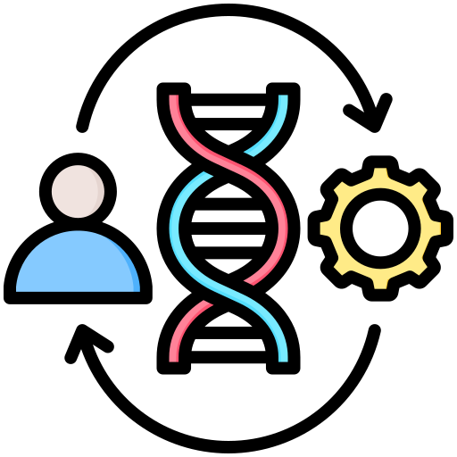

Engineering is a dynamic field that combines science, mathematics, and technology to develop innovative solutions for real-world problems.
Here are some major branches of engineering:

🛠️ Mechanical Engineering
Mechanical engineering involves the design, analysis, and manufacturing of mechanical systems. It’s a diverse field with applications ranging from aerospace to robotics.
- Design and Manufacturing
- Thermodynamics
- Fluid Mechanics
💻 Computer Science Engineering
Computer Science Engineering focuses on the design, development, and implementation of software and computer systems. It plays a key role in the digital world.
- Software Development
- Artificial Intelligence
- Data Science & Big Data
.png)
🔌 Electrical Engineering
Electrical engineering deals with the study and application of electricity, electronics, and electromagnetism. It powers everything from home appliances to industrial systems.
- Power Systems
- Control Systems
- Telecommunications

🏗️ Civil Engineering
Civil engineering focuses on the design and construction of infrastructure like roads, bridges, and buildings. It plays a crucial role in the development of urban spaces.
- Structural Engineering
- Environmental Engineering
- Transportation Engineering

⚙️ Mechatronics Engineering
Mechatronics engineering combines mechanical, electrical, and computer engineering to design and create intelligent systems and robotics.
- Automation Systems
- Robotics
- Control Systems
🛰️ Aerospace Engineering
Aerospace engineering focuses on the design and development of aircraft and spacecraft, with applications in air and space travel.
- Aircraft Design
- Space Exploration
- Flight Mechanics

🩺 Biomedical Engineering
Biomedical engineering combines principles of biology and engineering to develop healthcare technologies such as medical devices, prosthetics, and diagnostic equipment.
- Medical Devices Design
- Biomaterials
- Medical Imaging
🌱 Agricultural Engineering
Agricultural engineering integrates technology with agricultural science to improve farming processes and food production systems.
- Farm Machinery
- Soil Engineering
- Water Resources Engineering

🌍 Environmental Engineering
Environmental engineering focuses on developing sustainable solutions for water, air, and waste management to improve environmental quality.
- Water Treatment
- Waste Management
- Environmental Impact Assessment